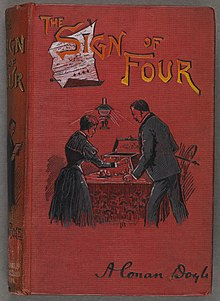
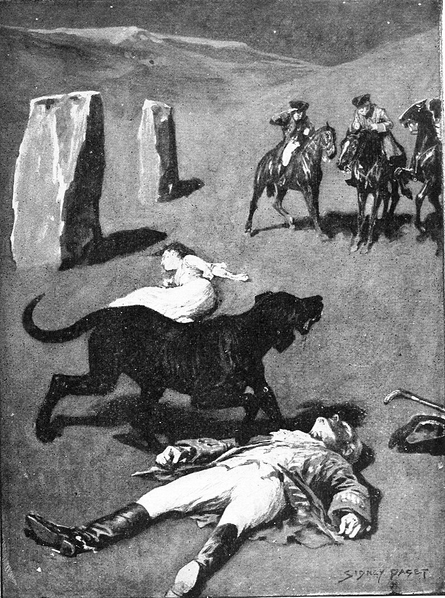

Sherlock Holmes is a fictional detective created by Sir Arthur Conan Doyle. He is known for his keen observation, logical reasoning, and ability to solve complex mysteries.
The story marks the first appearance of Sherlock Holmes and Dr. Watson, who would become the most famous detective duo in literature. The book's title derives from a speech given by Holmes, a consulting detective, to his friend and chronicler Watson on the nature of his work, in which he describes the story's murder investigation as his "study in scarlet": "There's the scarlet thread of murder running through the colourless skein of life, and our duty is to unravel it, and isolate it, and expose every inch of it."[1] The story, and its main characters, attracted little public interest when it first appeared. Only eleven complete copies of the magazine in which the story first appeared, Beeton's Christmas Annual for 1887, are known to exist now, which have considerable value.[2] Although Conan Doyle wrote 56 short stories featuring Holmes, A Study in Scarlet is one of only four full-length novels in the original canon. The novel was followed by The Sign of the Four, published in 1890. A Study in Scarlet was the first work of detective fiction to incorporate the magnifying glass as an investigative tool.[3]
Holmes claims he needs a problem to solve and is bored; shortly thereafter, Miss Mary Morstan arrives with a case. Miss Morstan explains that, in December 1878, her father, Captain Arthur Morstan, had arrived in London, on leave from his post as a convict guard in the Andaman Islands. He requested her to meet him at the Langham Hotel, but he was not there when she arrived. Mary contacted Major John Sholto, a former convict guard who had known her father and was now living in England; however, he denied having seen Morstan, and Morstan was never heard from again. Four years later, Miss Morstan answered an anonymous newspaper advertisement, asking for her whereabouts. She then received a large and valuable pearl in the post, a gift repeated once a year for six years. With the sixth pearl, she received a letter asking for a meeting, claiming she has been "wronged". Holmes takes the case, and soon discovers that Major Sholto had died in 1882; within a week of his death, Mary received the first pearl. The only further clue Mary can give Holmes is a map of a fortress found in her father's desk, appended with the words "The Sign of the Four: Jonathan Small, Mahomet Singh, Abdullah Khan, and Dost Akbar".
it is set in 1889 largely on Dartmoor in Devon in England's West Country and tells the story of an attempted murder inspired by the legend of a fearsome, diabolical hound of supernatural origin. Holmes and Watson investigate the case. This was the first appearance of Holmes since his apparent death in "The Final Problem", and the success of The Hound of the Baskervilles led to the character's eventual revival